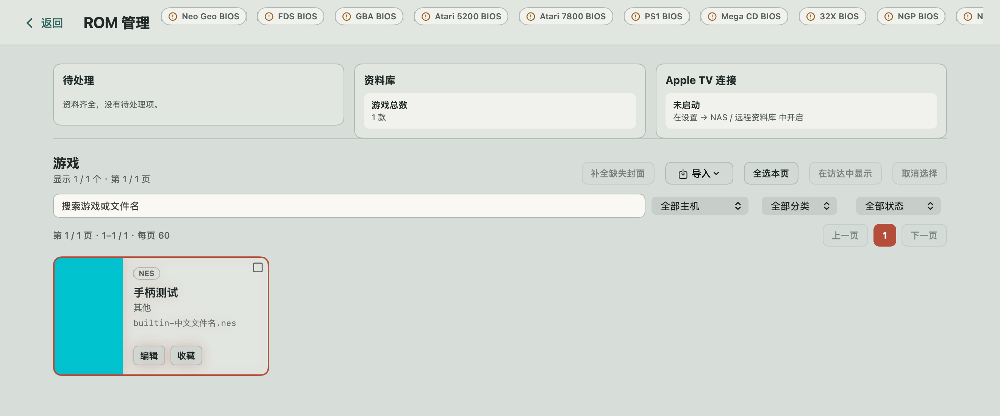
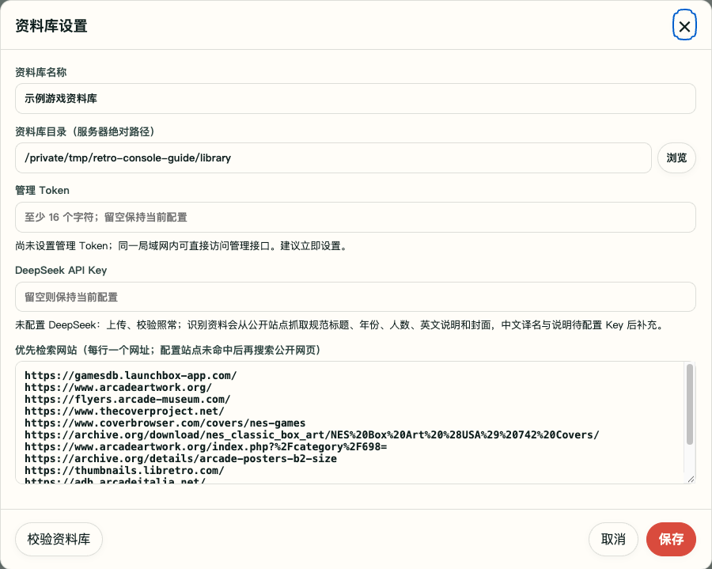
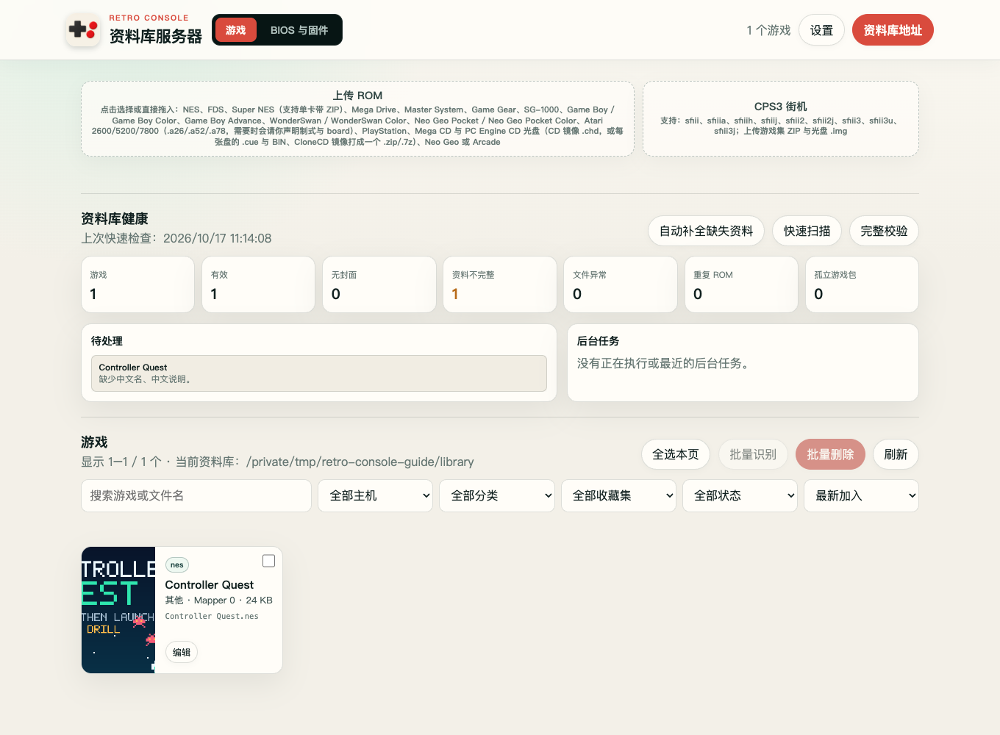
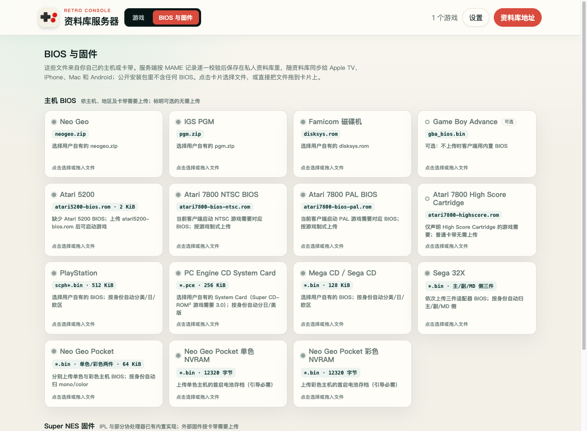

STEP BY STEP · LIBRARY SERVER 1.3.4
装好应用，
管理自己的游戏库。
Mac 应用可以直接管理本地 ROM 并游玩；也可以用电脑或群晖 NAS 存放共享资料库，让电视、Mac 或手机连接。先选适合自己的用法，再配置目录、导入游戏。
WINDOWS · MACOS · LINUX
01 普通电脑安装
安装并启动 Docker
Windows 或 macOS 安装 Docker Desktop，安装后打开应用，等待引擎启动。Mac 请按自己的 Apple 芯片或 Intel 芯片选择版本；Windows 按官方安装器要求启用 WSL 2 等组件。Linux 可安装 Docker Engine 与 Compose 插件。
Docker 官方安装说明 ↗ · Windows ↗ · macOS ↗
打开终端，Windows 可用 PowerShell，检查下面两条命令。第二条能显示服务端信息，才说明引擎已运行。
docker compose version docker info下载并解压服务器 ZIP
前往服务器端下载页，选择「普通电脑 · Docker Compose」。把 ZIP 完整解压到准备长期保留的文件夹，确认其中有
compose.yaml、Dockerfile、app和README.md，不要在压缩包内直接操作。创建资料库文件夹
在
compose.yaml同级创建名为library的文件夹。它将保存游戏包、BIOS 和封面。已有目录也可以使用：复制.env.example为.env，把FC_LIBRARY_HOST_PATH改成该目录的绝对路径。Windows 使用类似D:/Games/FCEmulatorLibrary的路径。文件必须叫
.env，不要保存成.env.txt。Docker Desktop 若询问是否允许访问此文件夹，请允许共享该目录。启动并打开管理页面
Windows：在解压后的文件夹空白处右键，选择「在终端中打开」（也可使用 PowerShell）。Mac：打开「终端」，输入
cd加一个空格，把解压后的文件夹拖进终端，再按回车。Linux：在文件管理器中选择「在终端打开」。确认当前目录中能找到compose.yaml，然后运行：docker compose up -d --build docker compose ps首次构建需要联网获取基础镜像。看到
server正在运行后，在同一台电脑浏览器打开http://127.0.0.1:8282/，继续下方的目录配置。当前默认只允许本机访问，电视连接前还需要完成局域网设置。
SYNOLOGY DSM 7
02 群晖安装
准备 Node.js 与公开 SPK
在 DSM「套件中心」安装适用于本机的 Node.js 18 或更高版本；启动脚本支持查找 Node.js 18、20、22 套件。随后前往服务器端下载页下载群晖 SPK。公开包不附带 Node 运行时，标记为
noarch；仍需要 NAS 上可运行的 Node.js。手动安装套件
在「套件中心 → 手动安装」选择下载的 SPK，核对套件名称 Retro Console Library 后按向导完成安装。正式版管理端口为 8282。
创建资料库并授予权限
通过 DSM「控制面板 → 共享文件夹」准备一个专门存放游戏资料库的共享文件夹，例如
FCEmulatorLibrary。进入该共享文件夹的「编辑 → 权限」，把用户类型切换为系统内部用户，给FCEmulatorLibrary账号勾选读取/写入并应用。这是套件账号，不是你登录 DSM 使用的管理员账号。若只授权共享文件夹中的某个子目录，还要让套件账号能够穿过上级目录；只给最深处的文件夹读写权限可能仍会报「拒绝访问」。优先使用独立共享文件夹，避免向无关目录授予权限。
启动并打开管理页面
在套件中心启动服务，点击「打开」，或在浏览器输入
http://你的群晖局域网IP:8282/。不要使用 DSM 的 5000 / 5001 端口代替服务器端口。若 DSM 开启了防火墙，允许受信任局域网访问 TCP 8282。进入网页「设置」后选择资料库的真实路径：可能是
/volume1/FCEmulatorLibrary，也可能是/volume2/FCEmulatorLibrary，以 NAS 实际存储卷为准。不要把 Mac 上的/Volumes/…路径直接填到群晖中。
MAC APP · LOCAL OR SYNOLOGY
03 Mac 应用：自己管理游戏，也能连接群晖
只在 Mac 上玩，安装 Mac 应用就够了，无需群晖或 Docker。你可以直接管理自己的本地 ROM 资料库；已有群晖资料库时，也可以把 Mac 当作客户端连接它。下面先介绍本地用法，再介绍如何切换到群晖。
安装 Mac 应用
前往客户端下载区下载 macOS DMG。当前版本适用于 Apple 芯片 Mac，要求 macOS 14 Sonoma 或更高版本。打开 DMG，把应用拖到「应用程序」，再从「应用程序」打开。仅本地使用时，不必执行下面的 Docker 安装步骤。
选择自己的 ROM 目录
打开应用的「设置 → NAS / 远程资料库」，用服务器地址与本地目录之间的开关切到本地模式，再点击「选择目录…」。第一次使用可选一个新的空文件夹，例如自己创建的「Retro Console 游戏库」；应用会把空目录准备为可移植资料库。已有 ROM 文件夹也可以直接选择，文件按原位置读取；在访达里增删文件后，回到这里点击「刷新」。
你选择的是公共 ROM 目录，不是 App 的私有索引位置。索引、缓存和游戏存档由 App 自己管理，无需另选路径。使用上述空目录建立的可移植资料库时，导入的游戏会整理并写入该目录；明确设置或补全封面时，封面也会按公共资料库格式写回。备份时请保留自己的 ROM 资料库；该目录并不等于 App 的全部设置与存档。
在「ROM 管理」中导入和整理
切到本地模式后，在游戏页打开「ROM 管理」，选择「导入 → ROM 文件…」，选中自己合法拥有或获得授权的 ROM。ZIP / 7z 中只放一个卡带文件时，可由导入器识别；已经整理好的通用游戏包用「游戏包 (.zip / 目录)…」，含根
library.json的完整资料库用「整个资料库目录…」。不要把普通多游戏 ZIP 当作一个游戏包。导入后检查游戏列表和具体错误。可以搜索、收藏，点击「编辑」修改名称、分类和封面，或使用「补全缺失封面」搜索公开封面来源。游戏名称和你自己的文件名会保留；切换界面语言不会翻译或改写原始游戏资料。下方ROM 类型说明解释常见后缀和容器；其中格式表是服务器入口的清单，不能视作 Mac 对每款游戏的兼容保证。
按游戏需要补 BIOS，再启动验证
在「ROM 管理 → 导入」菜单选择对应的 BIOS 或固件入口，例如 FDS BIOS、PlayStation BIOS。只使用自己有权使用的文件，按BIOS 与固件说明准备正确的机型和地区；普通 NES 卡带不需要 FDS BIOS。不要把 BIOS 当作游戏卡带，也不要仅靠改名让文件通过校验。
返回游戏页实际启动游戏。导入成功说明文件已加入资料库；能否正常进入游戏，还取决于 BIOS、卡带硬件以及当前内核的兼容性。

已经有群晖？Mac 也可以直接连接
取得群晖资料库地址
按群晖安装和资料库配置准备好 NAS，在管理网页复制「资料库地址」，形如
http://群晖的局域网IP:8282/library/。Mac 与群晖应在可互通的同一局域网。地址要带/library/，不是 DSM 的登录地址。切到服务器模式并添加来源
回到 Mac「设置 → NAS / 远程资料库」，把中间开关切回服务器模式，填写「服务器地址」。服务器设有访问令牌时，选择「Bearer Token」并填写同一 Token；先点「测试连接」，再点「添加资料库」。连接过程与其他客户端相同，不需要在 Mac 另装 Docker。
本地目录和服务器是两种来源模式：使用本地目录时，服务器同步会暂停；切回服务器后再继续同步。切换模式不会把两边自动合并。已有来源可在「管理来源」中查看和同步。
FIRST SETUP
04 设置目录，上传游戏
1.3.4 起，管理页面右上角可选择「中文 / English」。首次打开会按浏览器语言显示，之后记住你的选择。切换会刷新当前页面；请先完成上传或保存，并关闭打开的弹窗。
选择服务器能看见的目录
打开管理网页右上角「设置」，在「资料库目录（服务器绝对路径）」中填写或浏览选择目录。Docker 填
/library，这是容器内的路径；电脑上的真实目录由.env的FC_LIBRARY_HOST_PATH决定。群晖填上一步确认的/volume…/共享文件夹路径。设置「资料库名称」，保存并等待页面刷新。首次使用建议先选择一个空目录。已有可移植资料库请选择包含根
library.json的目录；目录里的旧文件请先备份。设置管理 Token
仍在「设置」中，为「管理 Token」填写自己生成的至少 16 个字符的访问令牌，然后保存。保存后，上传、删除和修改设置等管理操作需要该 Token；换浏览器访问时，按页面提示输入同一 Token。它不是 DSM 密码，也不是 DeepSeek API Key。
不使用联网资料补全时，无需填写 DeepSeek API Key。公开包没有预置任何人的密钥或账号。
上传一款自己的 ROM
回到「游戏」页，点击「上传 ROM」选择文件，或拖入上传区域。ZIP / 7z 会按内部内容识别系统，不能仅凭文件名认定主机。街机驱动包应保留原名；需要声明的 Atari 卡带会弹出制式、板卡或控制器选择，按真实卡带填写。
上传结束后查看结果和游戏列表。出现「已加入」或「已存在」代表入库或去重成功；若还有启动依赖提示，请继续处理BIOS 与固件，不要把上传成功等同于已经验证游戏能运行。


BIOS & FIRMWARE
05 补齐启动所需文件
公开安装包不含 ROM 或主机 BIOS。打开管理网页「BIOS 与固件」，按对应卡片选择自己拥有的文件；页面会校验内容身份，错误文件会显示原因，不会覆盖原来已经验证的合法文件。
| 主机或游戏 | 需要准备什么 |
|---|---|
| Famicom 磁碟机 FDS | disksys.rom；普通 NES 卡带不需要。 |
| Neo Geo / IGS PGM | 分别上传 neogeo.zip / pgm.zip。 |
| PlayStation / Mega CD | 与游戏地区匹配的 BIOS；按文件身份自动区分日、美、欧版。 |
| PC Engine CD | 有效的 System Card；Super CD-ROM² 游戏需要 3.0。 |
| Sega 32X | 主 SH-2、副 SH-2、MD 侧三件 BIOS，按卡片提示逐件上传。 |
| Neo Geo Pocket | 对应单色 / 彩色机型的 BIOS，以及对应的首启 NVRAM。 |
| Atari 5200 / 7800 | 5200 使用 atari5200-bios.rom；7800 当前客户端需要游戏制式对应的 NTSC / PAL BIOS，HSC 只用于声明 High Score Cartridge 的卡带。 |
| Game Boy Advance | 外部 gba_bios.bin 可选，未上传时客户端使用内置实现。 |
| Super NES | IPL 与部分协处理器已有内置实现；只有相应卡带需要的外部固件才需上传，例如使用 ST011 / ST018 的卡带。不要把同尺寸的其他文件改名冒充固件。 |
ROM 上传后若缺少依赖，页面会保留「ROM 已入库」的启动依赖提示，后续其他文件上传成功不会把它盖掉。点击「前往 BIOS 与固件」补齐文件，再重新上传该 ROM 确认；原有提示是上传当时的记录，可以手动关闭。CPS2 游戏还需匹配的 .key，可随自己的 ROM ZIP 提供。

LOCAL NETWORK
06 允许局域网设备访问
先完成管理 Token 设置，再开放给电视或其他设备。让服务器与客户端处在同一个可互通的局域网；访客 Wi-Fi 或路由器的设备隔离可能阻止连接。
Docker：绑定电脑的局域网地址
在系统网络设置里查看电脑的局域网 IPv4 地址。编辑解压目录中的
.env，把FC_LIBRARY_BIND_IP=127.0.0.1的地址部分换成这台电脑的实际局域网地址，端口保留FC_LIBRARY_PORT=8282。随后在同一目录运行：docker compose up -d如果改用现有资料库，
FC_LIBRARY_HOST_PATH仍指向原来的宿主机目录。不要删掉该配置。绑定局域网地址后，请在浏览器改用http://电脑的局域网IP:8282/；只绑定该地址时，原来的 127.0.0.1 地址可能不再可用。群晖：确认端口与防火墙
原生 SPK 启动后使用 NAS 的 8282 端口，通常无需 Docker 的绑定设置。若有 DSM 防火墙规则，仅对受信任局域网放行 TCP 8282。不要向互联网做端口转发。
先用另一台设备验证
在同一网络另一台电脑或手机浏览器输入服务器的局域网地址与 8282 端口。能打开管理页面后，再配置客户端。客户端里的
127.0.0.1指它自己，不能用来连接另一台电脑或 NAS。
ANDROID TV · APPLE TV · MACOS
07 连接客户端资料库
取得资料库根地址
通过服务器局域网地址打开管理网页，点击右上角「资料库地址」。客户端使用的地址形如
http://服务器的局域网IP:8282/library/。这与浏览器管理页的根地址不同，末尾要保留/library/，无需手工追加library.json。在客户端填写地址与认证
在 Android TV、Apple TV 或 macOS 客户端打开「设置 → NAS / 远程资料库」，填写「服务器地址」。服务器启用了 Token 时，认证方式选择「Bearer Token」，填入与管理网页相同的访问令牌。不要把 DSM 用户名密码填成 Token。
macOS 若提示正在使用本地 ROM 目录、服务器同步已暂停，先切回远程资料库模式再继续。
测试并添加资料库
先使用「测试连接」检查地址和认证，再使用「添加资料库」完成同步。已添加的来源可在「资料库来源」中测试或同步。完成后回到游戏页，检查游戏能否下载，再实际启动一局；个别内核的兼容性与 BIOS 是否齐全仍需以实际游戏表现为准。
HELP · ROM FORMATS
08 服务器支持哪些 ROM？
ROM 是你导出的游戏文件；ZIP / 7z 是把文件装在一起的压缩容器。下面列的是 1.3.4 服务器上传入口实际接受的类型，不等同于每款游戏都能运行，也不把客户端单独支持的格式算进来。先在「设置」中选好资料库目录，再上传。
卡带与磁碟游戏
下表的「单文件 ZIP / 7z」指压缩包内只放一个对应格式的游戏文件。封面、说明文档和其他游戏请不要混在同一压缩包内；系统会按成员内容校验，不会把所有 ZIP 都当作街机。文件可在子目录内；常见系统元数据会忽略，危险路径或损坏压缩包会拒绝。
| 主机 | 裸文件与 ZIP / 7z 内的成员 | 识别与依赖 |
|---|---|---|
| NES / Famicom | .nes；支持单文件 ZIP / 7z | 读取 NES 头与 mapper；具体 mapper 仍需客户端支持，普通卡带不需要 FDS BIOS。 |
| Famicom Disk System | .fds、.qd；支持单文件 ZIP / 7z | 归入 NES 系统，使用 FDS mapper 20 路径；需要 disksys.rom，与 NES 卡带不同。 |
| Super NES / Super Famicom | .sfc、.smc；支持单文件 ZIP / 7z | 检查卡带芯片；IPL 和部分协处理器内置，外部固件按游戏需要准备。 |
| Mega Drive / Genesis | .bin、.md、.gen；支持单文件 ZIP / 7z | 这些扩展名也可能用于 32X，系统会继续读头部确认。 |
| Sega 32X | .32x，以及内容被识别为 32X 的 .bin / .md / .gen；支持单文件 ZIP / 7z | 需要主、副 SH-2 和 MD 侧三件适配器 BIOS。 |
| Master System | .sms；支持单文件 ZIP / 7z | 按主机头部与卡带约束校验。 |
| Game Gear | .gg；支持单文件 ZIP / 7z | 系统由卡带内容继续校验。 |
| SG-1000 | .sg；支持单文件 ZIP / 7z | 按 SG-1000 卡带约束校验。 |
| Game Boy / Game Boy Color | .gb、.gbc；支持单文件 ZIP / 7z | 由头部决定 GB / GBC，不能只看扩展名；不支持的卡带控制器会拒绝。 |
| Game Boy Advance | .gba；支持单文件 ZIP / 7z | 外部 BIOS 可选；未上传时客户端有内置实现。 |
| WonderSwan / WonderSwan Color | .ws、.wsc；支持单文件 ZIP / 7z | 同一系统入口，由卡带内容区分机型。 |
| Neo Geo Pocket / Color | .ngp、.ngc；支持单文件 ZIP / 7z | 按机型准备 BIOS 与首启 NVRAM。 |
| PC Engine / TurboGrafx-16 HuCard | .pce；支持单文件 ZIP / 7z | 这是卡带入口，与需要 System Card 的 CD 游戏分开；System Card 本身会识别为固件。 |
| Atari 2600 | .a26；支持单文件 ZIP / 7z | 需要正确的制式、板卡与输入声明，页面按缺项提问；不能按标题猜 mapper。 |
| Atari 5200 | .a52，包括受校验的 CART 头；支持单文件 ZIP / 7z | 板型有歧义时需声明，可指定 2 / 4 端口机型；需要 5200 BIOS。 |
| Atari 7800 | .a78，包括受校验的 A78 头；支持单文件 ZIP / 7z | 无头映像须匹配已知卡带表，A78 头须有效；需要对应制式 BIOS，HSC 按卡带声明准备。 |
Atari 的 .bin 有额外限制：只有文件内容指纹匹配已知卡带表时，网页才会自动判定它属于哪台 Atari。未知 .bin 不能仅凭名字确定系统，且与 Mega Drive 的扩展名冲突；请使用可明确主机的正确卡带格式，按页面填写真实制式、板卡和控制器信息。选择一个猜测的板型不能让不支持的卡带变成可运行。
光盘游戏
| 主机 | 可上传内容 | 需要注意 |
|---|---|---|
| PlayStation | .fcps1；CD 镜像 .chd；ZIP / 7z 中的 CUE + BIN、CHD，或 CloneCD 的 CCD + 同名 IMG（及可选 SUB） | 按光盘身份识别，需要对应地区 BIOS。 |
| Mega CD / Sega CD | .fcmcd；CD 镜像 .chd，或 ZIP / 7z 中的 CUE + BIN、CHD，或 CloneCD CCD + IMG（及可选 SUB） | 经过光盘内容探测分流到 Mega CD，不是把任何 BIN 都当光盘；需要对应地区 BIOS。 |
| PC Engine CD | .fcpcecd；CD 镜像 .chd，或 ZIP / 7z 中的 CUE + BIN、CHD，或 CloneCD CCD + IMG（及可选 SUB） | 按光盘内容探测分流；需要有效 System Card，Super CD-ROM² 游戏需 3.0。 |
.cue 是轨道目录，不是游戏数据本身。请把它与所引用的全部 BIN 按原相对路径装进同一个 ZIP / 7z，不要只上传 CUE，也不要把裸 BIN 当作光盘上传。同一游戏的多张盘可在一个包内，每盘一份 CUE / CHD / CCD；不要混用这几种布局，也不要把不同游戏混成一个包。.fcps1 / .fcmcd / .fcpcecd 是本项目的光盘包格式，不能靠修改扩展名生成。
街机、Neo Geo 与 PGM
使用完整驱动集 .zip / .7z，保留原始驱动文件名和内部芯片文件，服务器会核对内容。这里是一个游戏含多块芯片的集合，不适用上面的「仅一个 ROM 成员」规则。Neo Geo 需另备 neogeo.zip，PGM 需 pgm.zip；CPS2 还需匹配的 .key。
拆分子集可能缺少母集芯片或设备 ROM；缺这些文件时不能运行。部分 ZIP 子集可从已经入库的匹配母集补全；若报缺母集，请先上传正确完整母集，不能靠改名或只上传子集解决。并非任何 MAME 驱动或任意来源 ROM 集都受当前内核支持。
CPS3 使用独立「CPS3 街机」区域：上传 MAME 游戏集 ZIP（含卡带 BIOS）和对应 CloneCD 光盘 .img，服务端再安装为游戏。这个裸 IMG 入口专用于 CPS3，不是 PlayStation 的通用裸 IMG 入口。已有本项目 .fcc3 安装游戏包可由服务器导入，但必须先配置资料库目录；改名的文件不算有效安装包。
没有在本表列出的类型，请勿仅凭客户端菜单或扩展名猜测服务器能上传。例如服务器内部有 Nintendo 64 清单校验代码，并不代表本版网页已开放 .z64 / .v64 / .n64 上传入口。
TROUBLESHOOTING & UPDATE
09 常见故障与升级
网页提示连接被拒绝，或打不开 8282
先看 Docker Desktop / DSM 套件是否正在运行；Docker 在解压目录执行 docker compose ps 和 docker compose logs --tail 80 server。若进程退出，应先处理日志中的启动错误，再检查防火墙。确认端口没有被其他程序占用，并核对访问的是服务器局域网 IP；只有 Docker 默认本机模式使用 127.0.0.1。
提示 EACCES / permission denied
这是文件系统权限问题。群晖检查内部系统用户 FCEmulatorLibrary 对所选共享文件夹的读写权限，以及每一级父目录的穿越权限；不要只检查 DSM 登录账号。Docker 检查挂载目录是否允许容器 UID/GID 1000:1000 写入，以及 Docker Desktop 是否已共享该目录。只修正资料库目录，不要对整块磁盘设置所有人可写。
群晖启动日志通常位于 /var/packages/FCEmulatorLibrary/var/fc-emulator-library.log。若报错指向临时缓存，也应核对是否安装了最新服务器包；升级后再检查新日志，避免把旧记录当成本次错误。
主机架构或 Node.js 不匹配
群晖公开 SPK 的 noarch 表示包内没有固定架构的 Node，不代表可以跳过运行时安装。请在套件中心安装适用于该 NAS 型号的 Node.js 18+。Docker Desktop 也要匹配电脑的 Apple 芯片、Intel / AMD 或 ARM 架构；出现镜像架构不支持或 exec format error 时，先核对运行环境，不要靠更改文件权限处理。
没有游戏、上传失败或提示 BIOS 缺失
核对「资料库目录」是服务器可见的真实目录；Docker 中应为 /library。上传失败时读取文件旁的具体错误，固件需同时通过尺寸和身份校验。上传成功但仍有缺 BIOS 提示时，按提示的主机、角色及适用地区补齐；GBA 的外部 BIOS 是可选项，不需要为普通 NES 或不使用外部芯片的 SNES 卡带随意添加 BIOS。
怎样升级并保留游戏和设置？
升级前备份资料库和设置。群晖在套件中心对同一 FCEmulatorLibrary 套件执行手动升级，保留原资料库及套件数据；不要把另一个测试实例当作原套件升级。
Docker 保留原 library、.env 和配置卷，用新版 ZIP 中的程序及 Compose 文件更新原安装目录，再运行：
docker compose build --pull
docker compose up -d如果换了解压位置，务必让 FC_LIBRARY_HOST_PATH 指回原资料库，避免 ./library 指向新空目录。docker compose down 用于停止服务；保留数据时不要添加 --volumes，该选项会删除配置卷。